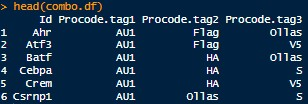

FlowCodeUnmix is intended to be a complete debarcoding and unmixing pipeline for spectral flow cytometry samples using the FlowCode protein epitope barcoding technology. Thi
FlowCodeUnmix is provided under an AGPL3 licence.
To read about FlowCodes see the Immunity paper by Bricard et al. and also the ProCode system upon which FlowCodes are based.
Installation
You will need to install the following packages:
- BiocManager
- flowCore
- FlowSOM
- flowWorkspace
- remotes (or devtools)
- AutoSpectral
Everything else should be installed automatically.
Run the code below on your machine to set everything up.
# Install Bioconductor packages
if (!requireNamespace("BiocManager", quietly = TRUE))
install.packages("BiocManager")
BiocManager::install(c("flowWorkspace", "flowCore", "FlowSOM", "remotes"))
# You'll need devtools or remotes to install from GitHub.
remotes::install_github("DrCytometer/AutoSpectral")
remotes::install_github("DrCytometer/FlowCodeUnmix")Required inputs
You will need these pieces of information:
- Single-stained control samples, preferably cell-based
- A “backbone”” control sample stained with all the anti-epitope antibodies (and nothing else)
- Unstained control cells matching the source used in the backbone control
- Unstained control cells matching the source(s) in your fully stained samples
- A CSV file describing the valid combinations of epitope barcodes and what they correspond to. Example format below: 
Help
FlowCodeUnmix is based around AutoSpectral. Please see the help pages and articles for AutoSpectral as a starting point. In particular, see the AutoSpectral Full Workflow.
For FlowCodeUnmix, see the example workflow in “FlowCode_Unmixing_Workflow.Rmd”, which is also available on the web at FlowCode Workflow. You can view all of the functions available in FlowCodeUnmix here.